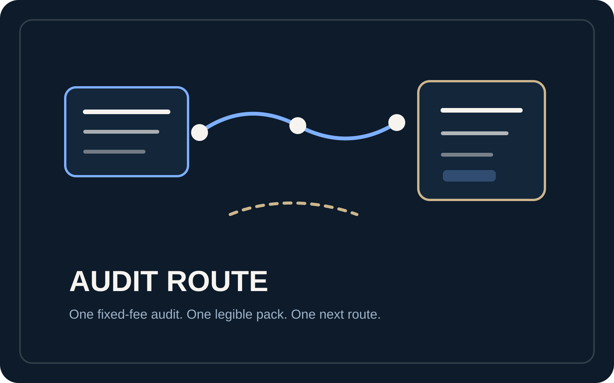
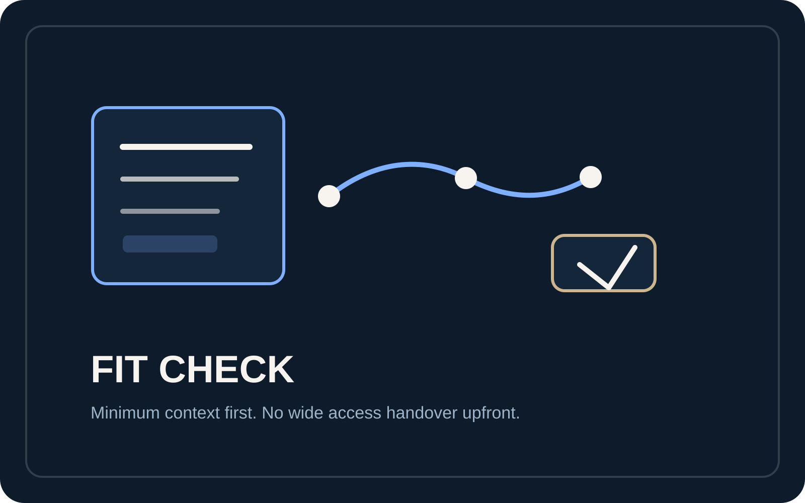

Short fit call
Check there is a real project, a real confusion point, and a bounded reason to investigate before anything heavier starts.
Process
The process is designed to make the current state readable, keep access proportionate, and return one decision-ready route without blurring into a much larger engagement.
Working sequence
Each step exists to keep scope tight and the result decision-grade.
Check there is a real project, a real confusion point, and a bounded reason to investigate before anything heavier starts.
Agree exactly what will be reviewed and what stays outside the audit so the work does not quietly sprawl.
Use the minimum practical access route, with read-only access preferred where possible.
Inspect the agreed surfaces, separate what is direct, derived, or unresolved, and assemble the decision pack without blurring those truth states together.
Deliver one sensible next move. If a bounded corrective lane is found, it can be quoted separately. If the truth points to something broader, the broader route is named explicitly instead of blurred.
What gets checked
Process is not just sequence. It also defines what Statepath is actually looking for inside the named repo, docs, dashboards, automations, and handover material.
Review the parts of the live build, scripts, configuration, or automation logic that are actually in scope for the decision.
Check whether the current explanation still matches the current implementation or whether the narrative has drifted from the truth on disk.
Inspect the named dashboards, integrations, exports, or flow surfaces that matter to the actual decision instead of assuming the route lives only in code.
Look for the specific gaps, conflicts, or fragile assumptions that would make the next wrong move expensive if they remain unresolved.
What this prevents
Premium process should feel safer because the route blocks avoidable sprawl, over-access, and confidence-heavy guesswork before they become expensive.
Without a fixed sequence, the work quietly expands from one bounded audit into broad rescue labour before the baseline has even been made legible.
The process keeps access proportionate so the review can stay serious and bounded instead of defaulting to “give us everything” by habit.
The sequence forces confirmed truth, caveats, and one next route into the same pack so the answer stays decision-grade rather than confidence-heavy.
Truth labels
This is the discipline that stops a tidy summary from over-claiming what the agreed surfaces can really prove.
Use direct when the agreed surfaces themselves clearly support the claim without extra interpretation doing the real work.
Use derived when the route needs reasoned interpretation across multiple signals, even if that interpretation is sensible and well-supported.
Use unresolved when the current surfaces cannot prove the point cleanly enough yet and caution still belongs in the recommendation.
Trust and privacy
Minimum access, agreed surfaces, and a clean closeout matter more than looking busy.
Client secrets, credentials, private code, sensitive personal data, or confidential commercial material should not be placed into third-party AI tools unless explicitly agreed in writing for that engagement.
Best first note
The goal is enough context to judge fit, not a novel.
That follow-through lane is quoted separately at £1,500 fixed. If the truth points to something broader, the broader route is re-scoped explicitly rather than being smuggled into the original engagement.
Output delivery boundary
This is where the process turns into a usable handover: clear enough to act, but still honest about what belongs inside the first step and what remains separate.
Linked pages
That is the whole point of the new structure.

Lead fee, follow-through lane, included outputs, and what is intentionally out of scope.
Open Offer
Inherited builds, AI-heavy drift, automation tangles, and decision-pressure signals.
Open Situations
Review the truth-map, risk-note, and next-route structure that the process is designed to produce.
Open Sample Output
See how Statepath handles agreed surfaces, read-only preference, and closeout before anything starts.
Open Trust & Access
Send the project, confusion point, and why the wrong next move matters from a dedicated page.
Open Start Here